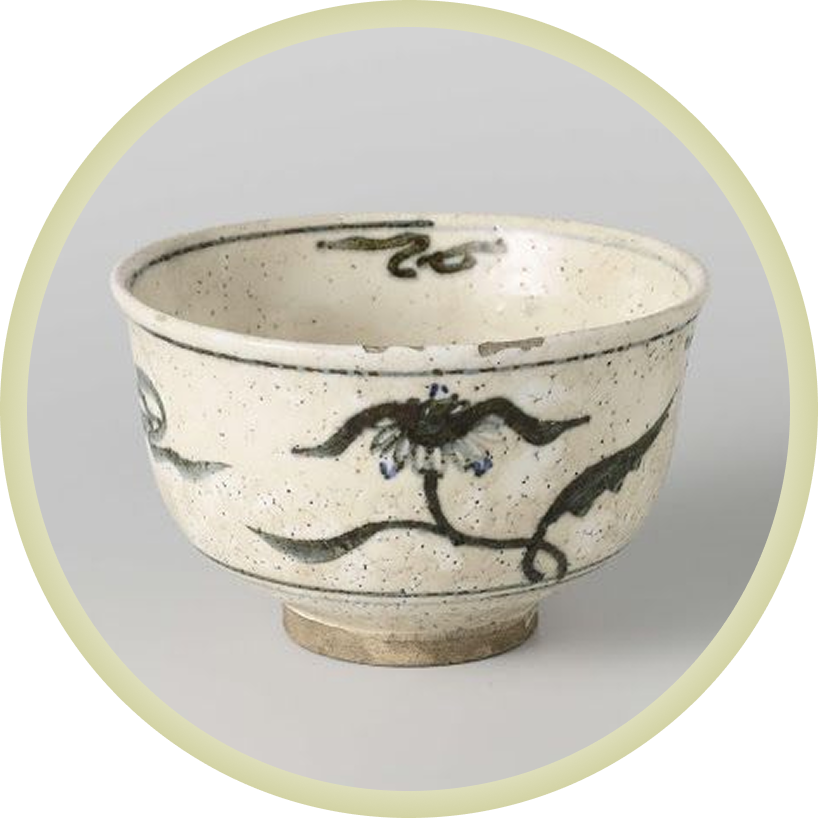

Вполне привычный нам предмет, непривычен только размер китайских чаш. Если офисная кружка объёмом около 200–350мл, то китайская чаша для традиционного чаепития — от 20 до 50мл. Естественно, что вначале хочется чашу побольше. Но вскоре, после нескольких чаепитий, обладатели крупных чаш замечают, что им трудно выпить весь заваренный чай. Ведь по традиции его проливают в среднем 10 раз. И если у вас чаша хотя бы 50мл, выпить приходится до пол-литра чая, что не всегда получается легко. Если же пользоваться чашами поменьше, за чаепитие удаётся и напиться, распробовав вкус каждой чаши, и не перепить до неприятных ощущений. Материал, из которого изготовлена чаша не столь важен. Чаши подбирают по зову сердца, для себя любимого. Если вам душу греет, когда все на столе с одним рисунком — берите сервиз. Если хотите выразить свою индивидуальность — выбирайте нечто оригинальное. Хотите привлечь чашечкой на полке своих друзей — купите что‑нибудь традиционное, яркое, китайское. Хотите видеть настой — присмотритесь к чашам с белой глазурью внутри или из стекла. Желаете смягчить вкус — приобретите чашу из исинской глины. При выборе чаши нет правильного или неправильного решения. Единственное, на что стоит обратить внимание, — чтобы объём чаш соответствовал завариваемому объёму чая, и всем его хватило.
